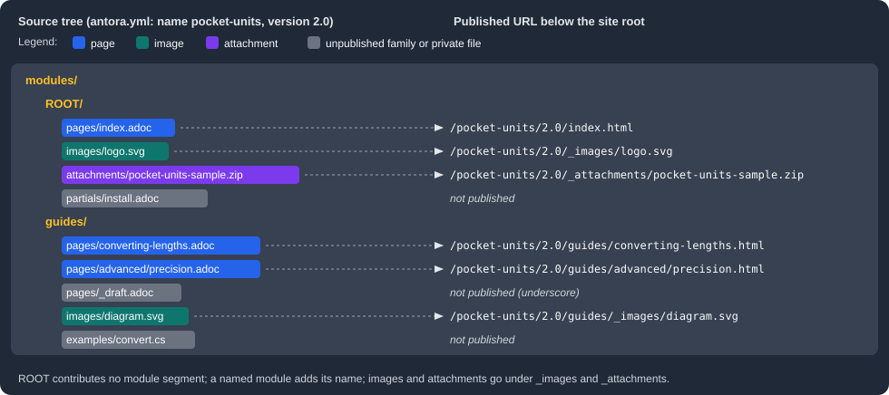

Modules and Families
|
This content was generated with the assistance of AI and should be verified against the official documentation before being relied on in production. |
Antora does not read a repository as a flat folder of documents. Inside each content root it recognizes a fixed
hierarchy: a modules directory, one directory per module and, inside each module, one directory per resource family.
The module and the family decide how a file is processed, whether it is published, what its resource ID is and what its
URL looks like. This page was written against Antora 3.2.1 and checked on 2026-10-26. The examples use Pocket Units, a
tiny units-conversion library, documented as component pocket-units version 2.0 with a ROOT module and a named
module called guides.
The standard layout
A content root is the folder that holds antora.yml, the component version descriptor.
By default it is the repository root; the content source keys
start_path and start_paths move it. Beside antora.yml Antora expects a directory named modules. Everything
outside modules (scripts, application code, a packages folder) is ignored.
pocket-units/ content root (repository root or a start_path)
antora.yml component version descriptor
modules/ required; only files inside it are collected
ROOT/ the reserved root module (name in capitals)
nav.adoc optional navigation file
pages/ family: pages
partials/ family: partials
examples/ family: examples
images/ family: images
attachments/ family: attachments
guides/ a named module (any name you choose)
nav.adoc
pages/
images/Three levels matter:
-
The
modulesdirectory is required wherever there is anantora.yml. It must contain at least one module directory. -
A module directory is either
ROOTor a named module. A module directory must contain at least one family directory with at least one source file, and may contain navigation files. -
A family directory groups source files that share the same processing and publishing rules. All five family directories are optional; you create one only when the module has files of that kind.
A module has no configuration or metadata of its own. It is a name that Antora attaches to every file below the module directory, and by convention the module name equals its folder name.
Modules
The ROOT module
ROOT is a reserved directory name and it must be written in capital letters. It is optional, but the official
documentation recommends creating it even in small projects because Antora gives its publishable resources special
treatment:
-
The module segment is left out of the published URL. A page in
ROOTis a top-level page of the component version. -
pages/index.adocinROOTis the default start page of the component version, so it is what a link to the component version, or the component’s entry in the site, opens. -
Other components and other modules reference its content by writing
ROOT(capitals) as the module name in a resource ID, for examplexref:ROOT:index.adoc[]orxref:pocket-units::index.adoc[]from another component, where an empty module segment also meansROOT.
If the content root has no modules directory at all, Antora treats the content root itself as an implicit ROOT
module, so the family directories sit next to antora.yml. Moving to the full layout later means moving those folders
into modules/ROOT. The official documentation advises against putting many topic folders into ROOT, because its
files can collide with the files of named modules.
Named modules
A named module is any other directory in modules, for example guides, reference or rz-interface. It exists to
group related content: a tutorial set, an API reference, an administration manual. You can create as many as you need.
Its name appears in the URL and in the resource IDs of its content: the page modules/guides/pages/converting-lengths.adoc
is published below guides/ and referenced as guides:converting-lengths.adoc.
Modules are an organizing device inside a component version, not a versioning device. All modules of a component share
the version and the title declared in antora.yml, and every module of a component version is built from the same
reference of the same repository. When content has its own release cycle, make it a separate component instead, as
described on the versioning page.
Families
A family is the kind of resource a file is. Antora assigns each file to the family whose directory name it lives in (for files in subdirectories, the first directory below the module decides) and applies the preset behavior of that family. There are five standard families.
| Directory | Published | Resource ID type | Purpose |
|---|---|---|---|
|
Yes, as HTML pages |
|
AsciiDoc source files ( |
|
No |
|
Snippets, usually AsciiDoc, inserted with |
|
No |
|
Source code, terminal output, data sets and other files inserted with |
|
Yes, as static files |
|
PNG, JPG, SVG and GIF images (static or animated GIF) used by the image macros. |
|
Yes, as static files |
|
Files visitors view or download, such as a PDF or a ZIP archive of a sample project. |
The two columns about publishing are fixed by the family: partials and examples are always unpublished, and pages,
images and attachments are publishable. The sections below describe each family.
Pages
The pages directory holds the AsciiDoc files that become site pages. Only files ending in .adoc belong there.
Subdirectories are allowed, and the .adoc files in them are pages too; the path below pages becomes part of the URL.
Each page is published as its own HTML file, and the URL is built from the module, the path relative to pages, the
file name and the configured HTML extension style. A page may declare page attributes and may use include:: and
xref:. The navigation page describes how pages are listed in a menu.
A page must have an extension. If you create a pages directory it must contain at least one .adoc file, either
directly or in a subdirectory.
Partials
A partial is a fragment of content that is not a page. It is usually a .adoc file (a shared description, a table of
terms, a disclaimer), but Antora does not require partials to be AsciiDoc: a partial can be any text file with the
extension that kind of file normally has. A partial is never published on its own; its content appears only where a page
includes it with include::partial$install.adoc[]. Files in subdirectories of partials are partials as well.
The same site you are reading uses this mechanism: every page of this section starts with
include::partial$ai-disclaimer.adoc[], which pulls the same notice into each page from a single file.
The partials, examples and attachments page
covers the include syntax, tags and line ranges.
Examples
The examples directory holds files that are meant to be shown inside pages: code samples, terminal output, data sets.
They are included with include::example$convert.cs[tag=usage]. An example does not need a file extension, which is
the one place where Antora loads an extension-less file, and it is still given a resource ID. As for partials, an example
is not published as a file; it appears only where a page includes it. The advantage over pasting the code into the page
is that the sample can be a real, compilable source file with its own tests, and the page shows a tagged region of it.
Pocket Units keeps this file in modules/guides/examples/convert.cs:
// tag::usage[]
double miles = Converter.Convert(10, LengthUnit.Kilometre, LengthUnit.Mile);
// end::usage[]Images
The images directory holds the images used by the block and inline image macros. Antora supports PNG, JPG, SVG and GIF.
Subdirectories of images are images too. An image is published as a static file, and its URL is built from the family
segment _images, the module (if it is not ROOT) and the relative path. A page embeds one by its resource ID with
image::logo.svg[Logo,width=64], and the macro works across modules and across component versions when the ID is
qualified.
Attachments
The attachments directory holds files that visitors download or open: a PDF, a ZIP of a sample project, a data file.
Any file type is allowed, and subdirectories are supported. Attachments are published under the family segment
_attachments. They are referenced with an xref, for example
xref:attachment$pocket-units-sample.zip[sample project], which produces a link with the class attachment. The
official documentation recommends keeping large binaries in a binary repository, such as object storage or Git LFS,
instead of a regular Git repository.
The assets alternate location
A module can also keep images and attachments inside an assets directory (assets/images and assets/attachments),
which Antora recognizes. The page for the standard directories does not list assets as a standard directory, and the
family pages mention it only as an alternate location. The examples on this page do not use it, and this layout was not
run here; prefer the plain images and attachments directories.
From file to URL
The figure shows the Pocket Units tree and where each file ends up in the published site.

Antora builds a URL from these parts, in order: the optional site url path, the component name, the component version
segment, the module name (omitted for ROOT), the family segment (omitted for pages), the path inside the family, and
the file name. Pages end in .html, images and attachments keep their original name. The family segment of images and
attachments starts with an underscore, _images and _attachments, so these folders can never collide with a page
folder and are easy to recognize. The underscore also has a practical effect on hosting: a plain Jekyll deployment, such
as GitHub Pages branch deployment, discards folders that start with _ unless the site ships a .nojekyll file. The
publishing page covers that.
To check the mapping, the example below builds a small scratch version of Pocket Units with the layout above (one
ROOT module and one guides module, a page, an image and an attachment in ROOT, two pages, an image and an example
in guides) and lists the published files.
npx antora antora-playbook.yml
find build/site -type f -not -path 'build/site/_/*' | sortThe command printed the following files. The _ folder (the UI bundle) was excluded from the list.
build/site/404.html
build/site/index.html
build/site/pocket-units/2.0/_attachments/pocket-units-sample.zip
build/site/pocket-units/2.0/_images/logo.svg
build/site/pocket-units/2.0/guides/_images/diagram.svg
build/site/pocket-units/2.0/guides/advanced/precision.html
build/site/pocket-units/2.0/guides/converting-lengths.html
build/site/pocket-units/2.0/index.html
build/site/sitemap.xmlNeither install.adoc (a partial), convert.cs (an example) nor _draft.adoc (a private page, see below) appears in
the output. The ROOT page has no module segment, and the page and image of guides have the segment guides; the
image URL guides/_images/diagram.svg shows the family segment placed after the module name.
Resource IDs
Each file in the content catalog gets a resource ID made of the component version, the module, the family and the path
below the family: 2.0@pocket-units:guides:page$converting-lengths.adoc. The family is also what makes the same file
name unambiguous: ROOT:page$index.adoc and ROOT:partial$index.adoc are different resources. The
resource IDs and xrefs page describes the full syntax. The
rules that follow from the layout are:
-
A reference inside a module can leave out the component, version and module. In
modules/guides/pages/converting-lengths.adoc,xref:advanced/precision.adoc[]points at a page of the same module. -
A reference into another module writes the module name:
xref:ROOT:index.adoc[the overview]fromguides, orxref:guides:converting-lengths.adoc[lengths]fromROOT. -
Partials, examples and images are looked up in the module of the page that contains the macro, unless the ID names another module. Including a partial that lives in another module therefore needs the module:
include::ROOT:partial$install.adoc[].
In the scratch build, a page in guides that included partial$install.adoc (a partial that exists only in ROOT) and
an image logo.svg (an image that exists only in ROOT) produced these errors, and the image fell back to a broken
relative src:
{"level":"error","msg":"target of include not found: partial$install.adoc", ...}
{"level":"error","msg":"target of image not found: logo.svg", ...}Source: Antora docs: Modules
Each message is one JSON line on standard error; an ellipsis stands for the file, source and stack fields that Antora adds.
The fix is to write the module (partial$ in ROOT becomes ROOT:partial$install.adoc and the image becomes
ROOT:logo.svg) or to move the file into the module that uses it. A tag that is missing in an included example is a
warning rather than an error: tag 'convert' not found in include file.
Hidden, unpublished and private files
Not every file in a family directory ends up in the site. Antora distinguishes three cases.
| State | Which files | Effect |
|---|---|---|
Hidden |
A file whose name starts with a dot, and, outside |
Not added to the content catalog at all. It has no resource ID, cannot be referenced and is not published. |
Unpublished |
Every file in |
In the catalog and referenceable, but never written to the output. |
Private |
A file in a publishable family ( |
In the catalog but not published. Setting the |
The private rule is useful for drafts. In the scratch build, modules/guides/pages/_draft.adoc was not published, and a
page that tried to link to it with xref:guides:_draft.adoc[Draft] failed with this error and rendered an unresolved
link:
{"level":"error","msg":"target of xref not found: guides:_draft.adoc", ...}Do not confuse the underscore rule with the underscore in the output folders _images, _attachments and _: the
latter are generated by Antora and never exist in the source tree.
Choosing between ROOT and named modules
A reasonable path for a project like Pocket Units is to start small and grow:
-
Put everything in
ROOT:index.adoc, a getting-started page, a changelog, anav.adocand the images. -
When a group of pages gets its own audience, create a named module for it (
guidesfor how-to material,referencefor API documentation,adminfor operations) with its ownnav.adoc. -
Keep shared fragments in the
partialsof the module that owns them and refer to them with the module prefix from the others; when many modules share a fragment, keep it inROOT. -
Move files gradually. Because the module is part of the resource ID, moving a page between modules breaks every xref to it; Antora reports each one as an error, so a build is the checklist of fixes.
The navigation files of every module are registered in the nav key of antora.yml; this is covered on the
navigation page. This repository follows the same pattern: the
ROOT module of the site contains the landing page and the images of every guide, while each documented project
contributes its own component from its docs folder.
Pitfalls
-
rootorRootis an ordinary named module, not the root module: only the all-capitalsROOTomits the module segment from URLs. -
An image or attachment without an extension is not loaded, and neither is any file beginning with a dot (a
.DS_Storeor a.gitkeepplaceholder is simply ignored). -
Resource IDs include the module, so the same page name may exist in several modules, but a page that does not appear in the site is usually in the wrong directory, has a name or parent folder starting with an underscore, or is missing the
.adocextension.